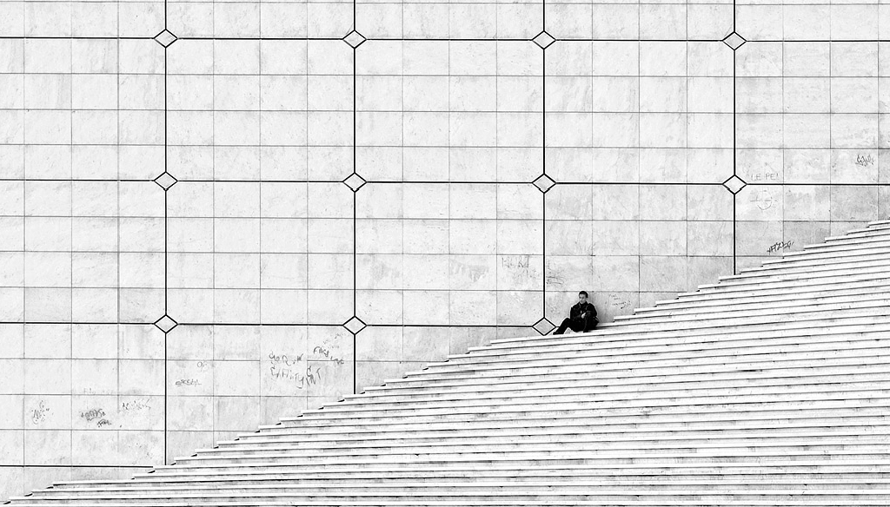
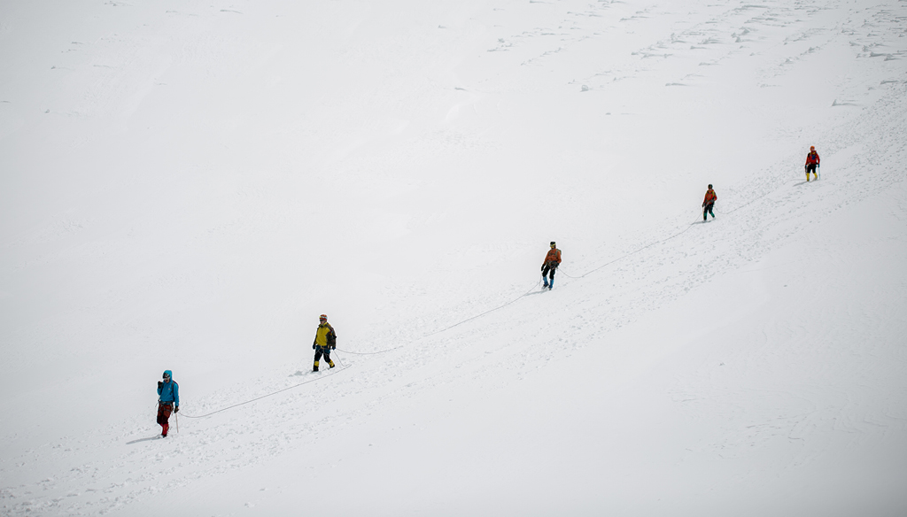
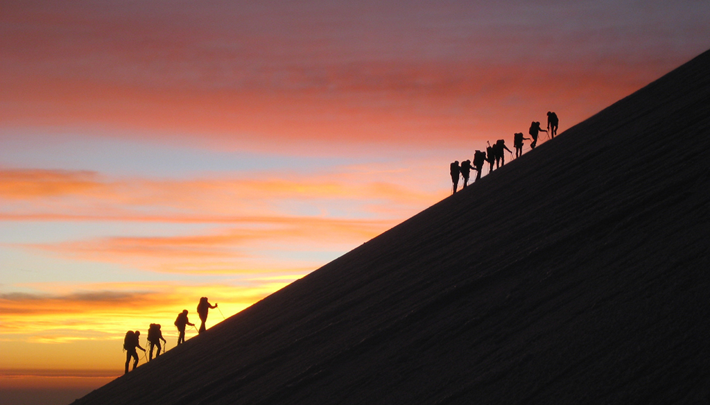

斜线构图简介
它是指用倾斜的线条 , 影调或呈倾斜状的物体把画面连接起来 . 这是一种动态的画面布局 , 它有意识的打破画面平淡的静止感觉 , 给人一种倾斜或不稳定的感觉 ,表现出向上或向下的斜向运动 ,运动的好 ,能表现运动的即视感 .
斜线构图相当于水平线的宁静安详来说 ,斜线自身的特点是一种趋势的 ,动态象征这是它具有了方向性和速度感 . 如果把斜线理解为简单的坡度 ,那么这个坡度上的物体势必给人一种像一端划动的心理暗示 .
斜线构图特点
优点一 看到倾斜没有支撑的物体 一般会给人一种倾倒的感觉 ,同样倾斜线条运用在摄影构图中 , 则具有极强的动感 . 可以给画面增添无限的生机 ,当然也带来了动荡不定的危机 .
有点二 ,在日常生活中常常能见到长长的回廊公路等 ,因透视关系而使原本水平或垂直的线条在画面中倾斜 ,这样有引导视线 ,体现画面纵深空间感的效果 .